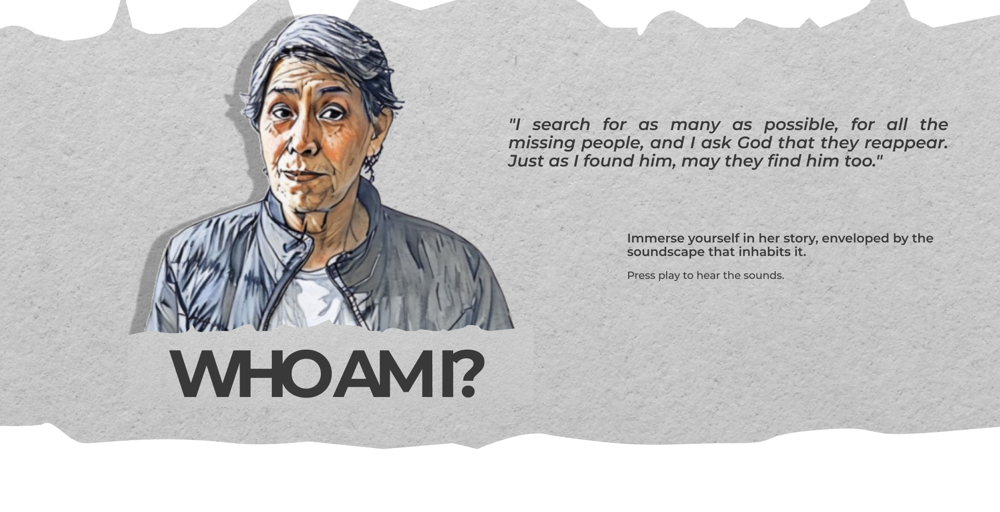

When I was a little girl, I was all spirit and mischief. I loved making faces at people walking by, sticking my tongue out at the boys just to see them get uncomfortable or react with surprise at such boldness. Sometimes I ran after my siblings right after pulling one of my pranks. I was very “burletera”—as they used to say back then. I loved joking around and teasing people a little, always with that innocent irreverence only childhood can carry.


My name is Idali Garcerá Valdés. I was born on October 23, 1949, in the city where the heat embraces you, sugar fills the air, and the breeze dances to the rhythm of salsa: the branch of heaven, my beloved Cali, Colombia.
I was the third of eleven siblings, although today only five of us remain, holding tightly to our memories and our shared history. I grew up in a home of hardworking hands. My father, Guillermo Garcerá Vivas—a man with a firm step and serene gaze—worked at Croydon, a major footwear company in Cali; at that time, it was a symbol of the industrialization that was beginning to transform the city. He also worked on the railroad, and his life unfolded among locomotives and rails, back when the train still crossed the valleys of Cauca, connecting Cali to other regions of the country.
Those were years when the city was growing with momentum. It was the 1950s, when industrial development was starting to flourish, sugarcane dominated the fields, and working-class neighborhoods filled with life, music, and hope. Cali was a city in constant movement: loud, hardworking, warm—just like the soul of its people.
My mother, María Jesús Valdés Mariño, before dedicating herself to our home, worked in a well-known textile factory in Cali called La Garantía. At that time, the city was experiencing an industrial boom that offered new job opportunities, especially for young women from humble families. La Garantía was one of the largest and most important textile companies in the region. Its huge warehouses buzzed with activity: the sound of looms, the smell of cotton, the steady rhythm of long workdays. There, among threads, needles, and machines, my mother met my father—the man who would change the course of her life.
They married when he was 27 and she was 22—an age when many already dreamed of starting a family. From that moment on, my mother traded fabric for the kitchen, looms for cradles, and devoted herself entirely to being a homemaker. With hardworking hands and a firm heart, she built the foundation of our home, guided by love, patience, and the inexhaustible strength that only mothers possess.
I came into the world during turbulent times, when bipartisan violence stained with fear the fields and cities of Valle del Cauca. Liberals and conservatives were fighting for the country with bullets and machetes. I was brought into this world by my grandmother, María Antonia Vivas, a well-known midwife in Villa Colombia, a traditional neighborhood full of life and memories on every corner. There, on 52nd Street—the spine of the neighborhood and the commune—businesses flourished like bougainvillea, making that street feel like an extension of the old, beloved center of Cali.
Back then, few women gave birth in hospitals. Babies were delivered at home, with the wise hands of a midwife and hearts entrusted to God. And so, by grace or destiny, children were born well.
As a girl, I was pure spirit and mischief. I loved making faces at passersby, sticking my tongue out at the boys just to see their reactions; and sometimes I would run away from my siblings after teasing them. I was very “burletera,” as they said—joking around, teasing people a little, always with that innocent irreverence unique to childhood.
But if something was sacred in my house, it was respect. Just a single firm look was enough to impose authority. With only a raised eyebrow, my parents made us understand that it was time to go to bed or that we shouldn’t be around when adults were talking. That’s how children were raised back then—with discipline, clear boundaries, and a lot of love between the lines.
I remember that when I was about seven years old, something happened that would forever mark the history of my city and my own memory. It was the early morning of August 7, 1956, when an explosion in the San Nicolás neighborhood shook all of Cali. At first, among neighbors’ whispers, people said everything had been caused by a drunk man who had thrown a lit cigarette near a truck loaded with flammable materials.
But with time, the truth came out: it hadn’t been a small accident or an unfortunate spark. Six trucks carrying 42 tons of dynamite—coming from the port of Buenaventura—had exploded in the middle of the city. The cargo was supposed to be used for road construction in Cundinamarca, but it never arrived. The explosion was so powerful that the earth trembled, and people said the blast was felt even in Buga, Palmira, and Jamundí.
One image I recall with absolute clarity is that of the Agustín Codazzi Army School. The blast opened a massive crater in that place, and many soldiers were buried under the rubble. It felt as if the whole city had breathed sorrow all at once.
Around four thousand people died in Cali, and more than twelve thousand were injured. That night, the sky filled not only with fire, but also with tears. I was just a little girl, but the explosion shook me to the bone. Even today, I can still hear—deep in my memory—that strange silence that remains after fear.
When I was ten, in 1959, we left Cali and traveled to Bogotá. We traveled with my parents, my uncles, and my siblings, carrying few belongings but many hopes. My father, influenced by my uncles, decided to move with the idea of starting a business in the world of jewelry. That’s how we all slowly began learning the craft. I remember that by then, one of my brothers had already learned to make the ornamental buttons used on mariachi outfits. The house felt full, like a sack stuffed with new voices, restless hands, and dreams trying to take root in a cold and unfamiliar city.
We arrived with nothing but what we wore, dreams in our suitcase, and hope as our compass. Our first destination was a neighborhood called El Siete de Agosto in Bogotá. However, we didn’t stay there long. It was a season of heavy rains, and one day the house flooded. My parents, facing the difficulties of the moment, decided to look for a safer place. That’s how we arrived at the La Estrada neighborhood in Engativá.
Despite being just a stop along our journey, La Estrada holds a special place in my heart. It was there that I had my First Communion. I must have been about ten years old. I remember it was on December 8th, right after the “Night of the Little Candles” on December 7th, that very Colombian tradition where the entire country lights up with lanterns, candles, and hope.
But for me, the next day had a bittersweet tone. My parents did not accompany me to my First Communion, and I arrived at the church alone, accompanied only by my aunt Lilia. In the middle of all the disorder and confusion, I forgot to bring the scapular and the ceremonial candle. I felt incomplete, as if something essential were missing at that long-awaited moment. Even so, that ceremony—with its solemnity and silence—became an act of faith, solitary but sincere. Perhaps that’s why, even though La Estrada was only a place of passage, it remains alive in my memory.
As I entered adolescence, I remember I often suffered headaches and neck pain. Back then, the Bogotá slaughterhouse was located near La Estrada, and my aunt Lilia and I would go there to collect fresh cow’s blood in a jar. We mixed it with wine as a natural remedy. It was one of those homemade formulas older people trusted, believed to strengthen the brain.
After our stay in La Estrada, our real journey began—moving from neighborhood to neighborhood, searching for a place to put down roots, a place to call home.
I clearly remember the uproar in 1961 when President John F. Kennedy visited Colombia. It was a historic event, talked about in every corner of the country—an emotional mix of excitement, amazement, and curiosity. The news spread from street to street, as if everyone wanted to claim a little piece of that foreign, glamorous moment. It was the first time a U.S. president set foot in Colombia, and his visit left a profound mark.
Two years later, when he was assassinated, the sorrow also crossed borders. In his honor, a sector in the southwest of Bogotá that still lacked its own identity was named after him. That is how the Kennedy neighborhood was born—a place that ceased being mere outskirts and began carrying the name of a man who, though distant, symbolized hope, modernity, and change. A name with a foreign accent and big dreams.
Thanks to an international aid fund promoted by the Alliance for Progress program—launched by President Kennedy himself—the Territorial Credit Institute began building houses in this area. My family was among the beneficiaries. We received a house in this new neighborhood, and with it, a new opportunity.
For us, it was more than just a roof over our heads: it was a beginning. A seed of stability planted amidst so much uncertainty. That's how this place, Kennedy, became our home, and also the symbol of a new chapter in our family history.
Back then, Kennedy was a place just waking up. Wide pastures, open land, and a few scattered houses, as if the neighborhood were still learning to call itself a neighborhood. Dust rose with every step, and the dirt roads were also roads of dreams and possibilities.
My dad had a farm in Cajicá at the time, and we brought seven ducks and geese from there for the new house. I loved watching them flutter about, diving into the puddles when it rained, as if they too were celebrating the birth of new life on that virgin land.
I was fascinated by living there. Kennedy smelled of fresh earth and sounded like airplane engines. I was amazed to see them cross the sky over the Banderas area, so close it seemed we could touch them with our fingers. Back then, the airport was still in Techo, and we often went to play around an old vintage airplane that had been damaged when they removed the airport. That abandoned aircraft became our spaceship, our fort, our secret hiding place. It was a different Bogotá, a city that still had room for imagination.
That’s how I reached my fifteenth birthday, in 1964. It wasn’t like today, where people throw big parties with dresses, photos, and music. Back then, turning fifteen wasn’t celebrated, at least not in my environment. The important celebrations were religious: a baptism or a first communion. Those were the ones that were lived with pomp and community. By that time, I was a young brown-skinned girl with long black hair that I proudly combed, and I liked feeling it flow in the wind when I ran.
Even though there was no party for my fifteenth birthday, I remember very well what celebrations in the neighborhood were like. At the parties my family attended, the famous sifones were common: large beer barrels, similar to the one in El Chavo del Ocho, which were refilled every time the Bavaria truck passed by. Disposable bottles didn’t exist yet, not even glass ones, so the sifón was the center of the party — the shared container for laughter, stories, and toasts.
Even though there was no party for my fifteenth birthday, I remember very well what celebrations in the neighborhood were like. At the parties my family attended, the famous sifones were common: large beer barrels, similar to the one in El Chavo del Ocho, which were refilled every time the Bavaria truck passed by. Disposable bottles didn’t exist yet, not even glass ones, so the sifón was the center of the party — the shared container for laughter, stories, and toasts.
In 1978, at 29 years old, I started working at Pat Primo, one of the most well-known textile brands in the country at that time. I worked on the looms, supplying the machines with yarn, filling the thread cones as a warper, and sometimes also checking their operation. It was a demanding, full-time job, but I did it gladly—it gave me independence.
The plant where I worked was located in Bogotá’s industrial zone, quite close to where I lived. Each day at my job felt like a precise choreography: the movement of the machines, the feel of the fabrics, the hands of coworkers who, like me, wove life stitch by stitch in a space of friendship and shared effort. Although the company grew a lot since then, at that time the process was mostly manual and human: threading, balancing threads, and checking the condition of the loom.

A few months before giving birth, my sister Esperanza noticed. She didn’t scold me, she didn’t question me—she opened the doors of her home. She welcomed me, along with her partner, into their house in Bosa so I could receive my son in better conditions. It was a gesture I still carry in my heart. There, among care, baby bottles, and an improvised crib, a new stage began for me: motherhood, that school where you learn with the heart.
And so the years went by, and in 1981, love knocked at my door—almost without warning, as life-changing things often do. I was already 32, and for many, that was synonymous with “having missed the train.” But not for me. Around that time, I met the father of my only son. We crossed paths during our workdays in Kennedy. Honestly, I don’t know if it was destiny or coincidence, but there he was, and there I was, at a crossroads.
Not long after, I became pregnant. The news shook my entire being—body and soul. I felt a mix of joy, pride, nerves, and an immense happiness knowing my child was on the way. In those days, it wasn’t common—nor well-regarded—for a woman to be a single mother, much less “so late.” So I decided to keep the secret for as long as possible. This led me to move to Candelaria (the new one), in the locality of Ciudad Bolívar, in an unfamiliar area where no one knew me and where the neighborhood was just beginning to rise between mud, bricks, and sheer will. The houses were unfinished, the streets unpaved, but hope wandered freely, and with it we walked every day.
I carried my pregnancy in silence, like a whisper full of love. I would talk to myself, gently caress my belly when no one was watching, and indulge my cravings—especially fruit. Oh, how I craved papaya! That’s when I understood the saying that boys eat a lot even from the womb.
A few months before giving birth, my sister Esperanza noticed. She didn’t scold me, she didn’t question me—she opened the doors of her home. She welcomed me, along with her partner, into their house in Bosa so I could receive my son in better conditions. It was a gesture I still carry in my soul. There, among care, baby bottles, and an improvised crib, a new chapter began for me: motherhood, that school where you learn with the heart.
On Thursday, July 1, 1982, the contractions began. My body started speaking to me with strength, with that mix of pain and the announcement of a miracle. My sister Esperanza and my son’s father accompanied me to the hospital. We first went to La Samaritana, which is near La Hortua. But there they told me they couldn’t attend to me.
We were then referred to the San Pedro Claver Clinic, right in the center of Bogotá. We stayed there until the next day, Friday, July 2, between rushing and deep breaths. Those were the days when the 1982 World Cup matches were being broadcast, and I clearly remember how the medical staff seemed more interested in the results than in the women’s contractions. Amid the excitement, the shouts coming from an old television, and the murmurs in the hallways, the moment arrived.
At one fifty in the afternoon, life made its way: a strong, clear cry said, “Here I am.” That’s how my beloved son, Diego Alberto Tamayo Garcera, was born, with the whole world’s heart waiting for him. It was a moment full of light, emotion, and fullness. For me, for his father, and for the entire family, his birth was a blessing.
But joy came with fear. Diego had to stay—he was taken to an incubator during his first days. He was still so fragile. The first person who met him after that time was my sister Esperanza, who visited him in the neonatal room to bring him his first little clothes, while I remained in another room under observation.
Because things didn’t end for me with the childbirth. I had to remain hospitalized until Monday due to some medical complications. I remember that the hardest part was the thirst. A sharp, persistent thirst that stayed in my memory like a punishment. They said there was no water in the clinic. And I, desperate, decided to get down from the stretcher—despite the cables, the pain, the fear—to see with my own eyes if it was true. In that small act of bravery, I hurt myself, of course, and that didn’t help shorten my stay either.
Finally, I was discharged on Monday. As I left, life greeted me with one of those ironies only it knows how to deliver: a furious downpour, as if the sky wanted to give me all the water I had been denied those days. I walked out soaked, but it no longer mattered. I was a mother now.
During Diego’s early years, his father was present. From him we inherited a love for salsa music—like any true caleño. He visited us when he could, although our relationship was always difficult. I didn’t live with him. My sister and her husband didn’t look kindly on our story, so we had to see each other in secret, stealing moments between routine and suspicion.
Thus passed Diego’s early years, filled with games, laughter, and the wonder of discovering the world through his eyes. But there was also exhaustion. The need for a place of my own—a home that was truly mine—pushed me to move. I found a house-lot in Bosa and went to live there with Diego and Miguel, my nephew.
It was a humble house, but full of future. In it we began another chapter, with more questions than answers, but with the certainty that together we could invent a life.
When Diego was a year old, in 1983, we decided to baptize him. We did it at Santa Margarita Parish in Kennedy, a modest yet warm church, the kind where the stained glass lets the light pass through as if it were a whisper from heaven. It was a simple, family ceremony, yet meaningful.
The holy water running down his forehead was also a way of asking the world to take care of him, to open a path for him.
While I kept making a living—like so many single mothers who bet on the little they have with great hope—the whirlwind arrived. It was in 1987, when Diego was five and I was 38. A piece of news I still remember with a knot in my throat: his father had decided to leave for the United States. He said he was going in search of better opportunities, that there wasn’t enough work here, that maybe there would be there. But deep down, we knew it was also a farewell.
The years went by and Diego grew up. He completed kindergarten and primary school. He was always a curious, sensitive child, full of life. As if he knew, from a very young age, that simply existing was already a miracle—one to be thanked for in every gesture, every bond, and every creature.
That’s how he discovered an immense love for animals. An overflowing fascination, especially for dogs. In the house-lot where we lived, with that wide piece of land that still kept a bit of countryside in the middle of the neighborhood, Diego created his own refuge: any dog he saw sick, he would take in and care for with a tenderness that moved me deeply. Seeing him so happy and so devoted, I decided to support him. If that was what inspired him—I thought—why not help him learn and grow? That’s how his childhood dream of becoming a veterinarian was born.
When Diego turned 10, in 1992, we celebrated his First Communion. It was at San Pablo Parish, on Primero de Mayo Avenue and 52nd Street, a church where the ceremony carried a serene and joyful atmosphere. By then I was still working at Pat Primo, and as was customary, I invited several of my coworkers. It was a very special event, filled with the love and effort of a mother who wants nothing more than to see her child happy. I organized his celebration with what I had, with what I could, but above all with what I knew: taking care of every detail so he would feel that this was his day.
I have many memories of Diego’s childhood at Parque de la Caña, in Cali. Even though I never learned to swim — I almost drowned once, and since then I have had a deep respect for the water — I loved accompanying him to his pool outings. Watching him enjoy himself was my greatest joy. We also went several times to the Pance River, that place where the water sings between stones and time seems to stop. Whenever we had the chance, we would put together a paseo de olla with friends or family: stew, firewood, laughter, and nature. Those were part of our rituals of happiness.
From the womb, Diego showed very particular tastes. He craved papaya, fresh fruit, everything that came with color and sweetness. And that continued: he loved fruit as much as he loved dogs and —curiously— meat in all its forms: grilled, stewed, as a steak, however it came. Fish, on the other hand, was never quite to his liking. He had his own way of eating it: he would eat only one layer and leave the other untouched, as if the dish spoke to him in two languages and he only wanted to answer one.
As a true caleño at heart, Diego also inherited a passion for Deportivo Cali. He loved playing soccer and riding his bicycle. Salsa ran through his veins. He loved dancing; he believed — and rightly so — that he was a great dancer. With a mischievous smile and that humor that was so his, so burletero, like his mom’s, he would poke fun at relatives who, according to him, “didn’t know how to move their feet,” while he shone, spinning, marking the rhythm, making it clear that music lived in his body too.
By then, we had moved back to Kennedy, this time to live with my siblings. It was like returning to the beginning, but with a different perspective. Kennedy was no longer the neighborhood of open fields and airplanes I remembered, but a more built-up, fuller place that still kept that community spirit we valued so much.
The years went by, and Diego entered adolescence. He studied up to ninth grade and, since he wasn’t able to finish high school, he decided to start studying veterinary science at an academy, holding tight to that immense love he felt for animals. His vocation was stronger than the obstacles. Even without a diploma, he put in the effort. Any dog that got sick, he cared for. But not only that — he was also a young man with a generous heart. If he saw someone in need, he didn’t think twice. He had an open heart and hands always ready to help.
One of the dogs I remember most was Morgan, an imposing boxer with a strong personality but a noble heart. Morgan had that kind of loyalty you can’t buy — the kind you earn. He was like Diego’s squire. If I scolded my son for something, there was the dog, staring at me seriously, as if saying, “Be careful with him — don’t you dare hit him.” He was Diego’s accomplice, his bodyguard, and his loyal friend.
Diego was a sociable, fun-loving person, very dear to everyone. He had several friends in the neighborhood with whom he shared laughter, stories, and a thousand adventures. Since he was a child, we had given him roller skates, and he learned to ride a bike at a very young age. Maybe that’s why he developed so much skill — he flew on that bike. He loved riding, feeling the wind on his face, and pedaling without direction, as if freedom escaped through his feet.
Life continued its course until, in 1995, when I was 46 years old, cancer knocked at my door. It was breast cancer — one of those pieces of news that shakes you to the bone and forces you to rethink everything: your body, your time, your loved ones, your dreams. However, it was also a trial I managed to overcome. I came out victorious, clinging to the unconditional love of my family, to traditional remedies, and to a deep strength that rose from my soul, as if life itself were pushing me forward.
At that time, Pat Primo was a great support for me. So were my coworkers, who helped with whatever they could: money, yogurt, fruits, and food for me and my family. I remember with love how that solidarity carried me when I needed it most.
At home, back then, we still had Morgan, Diego’s loyal boxer — his squire. Over the years, he also became my silent guardian. He liked to lie near my bed, as if he knew I needed company, as if he understood he was watching over my rest. I remember him there, lying down, watching life pass by without hurry, with the calm only wise animals possess.
But not everything was joy. One day, we decided to leave Morgan in a temporary kennel while we sorted out some things at home. When we came back to pick him up, he was gone. The person in charge started confusing us with stories: that they had taken him to a farm, that someone had claimed him, that they weren’t sure what had happened. The truth was that Morgan disappeared. He never came back. And the emptiness he left was immense.
Perhaps, to ease our sorrow —or his guilt— the owner of the kennel offered us another dog as compensation: a giant Saint Bernard, noble and good-natured. I remember seeing him and thinking: “How am I going to take care of such a huge dog?” He was so big he looked more like a furry rug with legs than a household pet. But, in time, he also became part of the family.
Unfortunately, fate was also cruel with the Saint Bernard —it had another plan for him. One day, I brought home a squash from a trip we took to Mesitas del Colegio in Cundinamarca and left it in the kitchen, never imagining the dog would be interested in it. Since he usually stayed outside, we didn’t think much of it. But that night, while we were sleeping, he ate the whole thing and was poisoned. When we woke up, we found him stiff, stretched out on the floor. They say squash can be deadly for dogs because it destroys their intestines. It was a tremendous sadness. We had no choice but to say goodbye. Diego and his friends lifted him onto a cart and took him to be buried in a field near the CAI of La Libertad. “Because such a huge dog… what else could we do?”
I remember another one of those stories that marked me as a mother. It was in 1996, when Diego was 14 years old. With a group of seven friends, they decided to do a youthful act of madness: ride their bicycles all the way to Mesitas. Just like that, with the confidence of someone who believes anything is possible. During the ride, one of the boys had an accident: he fell and split his lip on a rock. Diego was riding ahead, so focused on the route that he didn’t realize what had happened until he had already arrived in Mesitas. They had to go back to find their friend and bring him home on a bus, straight to the hospital.
But what could you do? That was just the way he was: impulsive, yet responsible. Brave, yet loyal. And always—always—ready to look after those around him, as if the whole world were part of the pack he had chosen to protect.
Once that stage passed, the years went on between my work shifts, the chores at home, and taking care of Diego, my sister Nancy, and my nephew Miguel.
It was between 2000 and 2001 that, thanks to the severance pay I received from Pat Primo, I was able to fulfill another dream: owning my own apartment. I moved with my son to Soacha, to the Ducales neighborhood, an area that was just starting to be urbanized at the time. It was a new place, still surrounded by open fields but filled with families arriving full of hope. Very close by was the Tierra Blanca wetland, a natural space people would still visit back then
to rest, walk, or even bathe. It was a simple place, but full of life—a popular spot for recreation amid everyday life.
In 2003, Diego served in the National Army of Colombia at Jungle Battalion No. 50 in Leticia. Proud of his homeland, Diego swore the oath to the flag.
Diego continued growing, becoming an adult. Like many young people, he started working in whatever jobs came his way. He got a job as a chromer in Kennedy, at a company that manufactured tricycles and ironing boards. Later on, he worked as a painter, and then at a brick factory near our apartment in Soacha. His life became filled with tools, with hands that fix things, with routines that build and shape. He forged his path among screws, paintbrushes, and long workdays. That was Diego: hardworking, creative, always willing to learn something new and lend a hand wherever it was needed.
In 2005, after nearly 27 years of dedication and steady work at Pat Primo, the time for my retirement arrived. I closed that chapter with gratitude and the satisfaction of having given the best of myself.

During the family celebration, we danced, talked, and had a few drinks. But after midnight, a suffocating anxiety washed over me—I felt an urgent need to go back home. I waited until dawn and, with the first ray of sunlight, returned to our apartment. When I arrived and opened the door, I noticed something unusual: our Dalmatian rabbit, the pet we had at the time, and next to the door, a sticky note that read: “I’m going to explore the coast, Mom.” And another note that said: “Mother, take care of the rabbit. I’ll be back on Monday.”

Nearly three years had passed since I retired when, in 2008, life confronted me with the unthinkable. I remember that year as a mix of fog and painfully sharp flashes. We were living in Soacha, where we had built our life through struggles, long workdays, and simple affections — and suddenly, the world changed.
During those days, Diego was working at the brick factory near our home in Soacha. It was extremely hard work; he constantly complained about the long hours, the physical strain, and especially the heat he had to endure in his hands while receiving freshly fired bricks. I remember gathering what I could to buy him a pair of leather gloves, hoping that his work might be a little more bearable.
However, it wasn’t just the job that made that first half of the year especially difficult for us. Diego was very sick due to severe gastritis. We did everything we could to take care of him, and in July, when his condition became critical, we began his emergency treatment at the Kennedy Hospital.
Between July and August, his days passed as he focused entirely on recovering, following the medical instructions to the letter. Perhaps that difficult situation was what pushed him, around that time, to look for a new job. That’s when he came up with the idea of going to the coast to work and explore. According to him, a great opportunity had come up: a job that would pay him more than a million pesos, the chance to see the sea for the first time — one of his lifelong dreams — and, in addition, send me money regularly from there to help with the apartment expenses.
He had been talking about that idea for several days; however, to me, it felt risky — especially because he didn’t know the place, and even more so given the fragile state of his health. For that reason, in one way or another, I expressed my worry and disagreement.
A few days later, on Saturday, August 23rd, we were invited to celebrate my niece’s birthday. I encouraged him to come with us, but Diego preferred to stay home. Around that time, he had told me that he was no longer thinking about going to the coast, and that had brought me some peace of mind. Since I had agreed to bring the cake, I went to the gathering, leaving Diego alone in the apartment.
During the family celebration, we danced, talked, and had a few drinks. But after midnight, a desperate anxiety washed over me: I felt an urgent need to return home. I waited until dawn and, with the first ray of sunlight, went back to our apartment. When I arrived and opened the door, I noticed something at the entrance: our dalmatian rabbit, the pet we had at the time, and next to the door, a sticky note that read, “I’m going to see the coast, Mom.” And another note that said, “Mother, take care of the rabbit. I’ll be back Monday.”
Despite my worry, that Sunday dragged on slowly. When the long-awaited Monday finally arrived, I welcomed it with the excitement of someone expecting a special visit. Knowing how much he liked it, I prepared some bistec, hoping to see my son walk through the door and enjoy it the way he always did: savoring every bite until he licked his fingers. But that day never came.
That was when a deeper desperation began to take over me. Diego was not someone who broke his promises. Something was wrong. I alerted my family and, with the few resources we had, we began searching for him.
I remember going to ask Don Hernán, the doorman of the housing complex where we lived, whether he had seen Diego leave or if Diego had told him anything. Seeing how distressed I was, he looked at me with a certain hesitation, as if unsure whether to speak. Then, in a low voice—almost as if revealing a secret—he admitted that Diego had mentioned he was going to work in Norte de Santander.
Afterward, I spoke with one of his closest friends. I begged him to tell me the truth, promising that if Diego returned, he would never know that it was him who told me. All of Diego’s friends were loyal to him; they protected him and helped him keep things from me. That was when he confessed that Diego had told him he had been contacted to go work in Ocaña, Norte de Santander.
Diego was last seen on August 23, 2008, in Soacha. Two days later, his name appeared in an official report: he had been reported as killed in combat in Ocaña, Norte de Santander, falsely accused of belonging to a paramilitary group called “Las Águilas Negras.” According to the report, along with him, two other supposed members of the same group had also “fallen.”
It was thanks to a phone call from a relative that I found out about the news. They told me to check the El Tiempo newspaper from August 25. I leafed through it with my heart in my throat, and there, in the middle of the printed pages, I found my son’s name —written as if he were just another criminal— next to the headline: “Three members of the Águilas Negras are killed in combat! THREE MEMBERS OF THE ÁGUILAS NEGRAS ARE KILLED IN COMBAT!”
Since Diego was carrying his ID card with him, the identification was immediate. From that moment on, the days blur into a fog in my memory. I remember that my family didn’t leave my side for a single moment. They made calls, asked questions, looked for answers where there was barely silence.
Shortly after, I received a call from the Forensic Medicine Institute in Bogotá. They wanted me to come in to identify a body that, they said, might be my son’s. I went with one of my nephews, my soul trembling. While my family continued searching for information on their end, they showed me a photograph. And there he was: the face I had raised, with his unmistakable expression, the features that no distance could erase… and that little shearling jean jacket I had seen him wear so many times.
It was Diego. There was no doubt left. No matter how much my heart wanted to deny it, the son I had said goodbye to that night would never return.
On September 1, 2008, they confirmed what deep down I already knew but refused to accept: yes, it was Diego. He had been presented as a combat kill.
In the midst of my grief, I found a helping hand in the union at Pat Primo, the company where I had worked for so many years. In that darkest moment, they offered me invaluable support: they covered the costs of transferring my son’s body. Their solidarity held me up when I needed it most.
On September 2, 2008, I received him in Bogotá. I went to the Los Olivos funeral home on 42nd Street with my heart in pieces, carrying in my hands the clothes he loved so much —the ones he would have chosen himself for a special occasion. I wanted him to be dressed with love, with memory, and with dignity.
We held the wake on September 3. It was an intensely emotional day. My family, my coworkers, and many friends from work accompanied me with hugs, tears, and words of comfort. In the midst of the sorrow, I felt the warmth of a network that held me up, that kept me from falling apart completely.
On September 4, we finally laid him to rest at the Apogeo Cemetery. Few dates carve themselves so deeply into the soul as that one. That day, burying my son, I knew my life would never be the same. But I also understood that a new struggle began in that moment: a struggle for truth, for justice, and for Diego’s memory.
At the end of September, I began a new chapter in my life: the fight for truth. A fight to clear my son’s name, to make sure the world knew that Diego was not a criminal, that he did not deserve such a cruel end or the lie that had been placed upon him.
It was along that path of complaints and paperwork —moving between offices, documents, and unanswered questions— that I reached the Personería and the Mayor’s Office of Soacha. There, amid administrative procedures and uncomfortable silences, I discovered that I was not alone. There were other women like me, other mothers whose sons had also been taken from them through deception, only to later be portrayed as criminals.
That is how I met other mothers. Pain brought us together, but so did dignity. Among us, without the need for many words, we recognized one another: we knew what it felt like to look at a grave and not understand how life had led to that moment.
From that irreparable grief, I transformed my mourning into a collective cause. Together with other mothers who, like me, had lost their sons through deceit and false accusations, we gave life to MAFAPO —the Mothers of the Soacha False Positives— a collective born from injustice but sustained by love and memory.
We began walking together, demanding justice. Our voices, once isolated, started to grow louder. More people became interested in our stories, and the pattern that united us became undeniable: young men from humble neighborhoods, lured with false promises of work, murdered, dressed in boots that weren’t theirs and poorly fitted camouflage clothing, then presented as criminals killed in combat. With MAFAPO, since then, I have traveled through many regions of the country demanding truth, justice, and reparations. We have exposed a systematic pattern of killings.
From then on, I have spoken in courts, in the streets, in universities, in the media, and before international organizations, carrying the voice of mothers who refuse to be forgotten. But our struggle is not only legal: we have also worked for memory. We have painted murals, raised photographs, planted trees, participated in performances, embroidered fabric, carved wood, written books, composed songs, and created symbolic acts that honor the lives of our sons —“healing lives through art.”
I have taken part in spaces for truth-telling, such as those promoted by the Special Jurisdiction for Peace (JEP). There, I have demanded that those responsible speak the truth, without excuses, and acknowledge the pain they caused. I do it for Diego, but also for all the young men who were unjustly taken.
I turned my pain into a voice that does not tire. Because even though he is no longer physically here, my son continues to walk with me every time I lift his name or hold up a photograph of him so that the country does not forget.
What we later learned about my son was that, on that Saturday when he left, he met the recruiter —a former soldier— his wife, and two other boys from the neighborhood. They arrived at the bus terminal and took a Copetran bus headed to Ocaña. It was the night of August 23, 2008. When they reached Ocaña, they were taken to a house where those who had offered them the supposed job were waiting. To keep them calm, they were given alcohol and drugs. They were told that Ocaña was just a stopover, that their final destination was the coast. Perhaps the boys believed it. Perhaps, for a moment, they let their guard down.
At three in the morning, drunk, unsteady, barely conscious, they were forced out of the house. They were taken into the countryside, and there, before dawn, they were handed over to the recruiters of the National Army of Colombia, belonging to the 15th Brigade under the command of Colonel Gabriel de Jesús Rincón, who took their lives on Sunday, August 25, 2008.
On August 10, 2017, in front of Colonel Rincón and the other thirteen soldiers responsible for my son’s death, I took the microphone. My voice trembled, but my resolve did not. Looking straight into the eyes of the man who had taken my son’s life, I said:
“I have waited these ten years… I came to the JEP to listen to those involved, to know what really happened, so that all of us may find at least a small measure of relief for our souls. I am a grieving mother. He was my only son, and his absence hurts me deeply. I miss him with all my being.”
There are no words enough to describe what it means to lose a child. It is as if a part of your soul decides to leave with them. As if time itself breaks, and every memory becomes filled with a silent echo. Diego left this world very young, with his generous heart, with dreams still unwritten, with hands full of life. But even though he is no longer here, his memory still stands. And I, his mother, continue walking for him.
I feel that, despite his absence, Diego never really left. His laughter, his way of dancing salsa, his dogs, his jokes, his bicycle, and the way he cared for others stayed with me. Sometimes I feel him close, like when the wind slips through the windows without permission. Or when I see a young man helping a dog on the street. Or when a Grupo Niche song plays and my feet start moving on their own.
Since then, I have learned to live differently. To live with his memory, which is not a shadow but a flame. I am grateful for every year we shared, every scar turned into a story, every moment I can speak of today because he was there. Because wherever someone like Diego sets foot, the grass keeps growing.
I lived in Ducales until 2023, the year I decided to close a chapter of my life in some way and sell the apartment in Soacha.

I am Idali. I have lived for more than seven decades, and in every silver strand of my hair lives a chapter of my story. Behind this white shimmer lies the memory of a woman who transformed pain into roots, roots into flowers, and flowers into strength… so she would never stop fighting.
I feel a deep connection with dogs. There is something in their nobility, in their unconditional way of being by your side, that reminds me of my son Diego’s charitable and generous soul. He taught me to look at them with different eyes, to recognize in them beings full of love, capable of giving without asking for anything in return. Since then, every time I see a dog on the street, I feel that a part of him is greeting me through that fur and those eyes.
I also love plants and everything that sprouts from the earth. I have a special passion for flowerpots, decorating them with bright colors, birds, and little painted creatures, as if each one could tell its own story. They are small gardens of life that remind me there is always something growing, even if we cannot see it.
As a true woman from Cali, the art of cooking is also part of me. I love the aroma rising from the pots, that silent language of broths that speaks of home, time, and care. I am fascinated by soups and creams, but my favorite, without a doubt, is corn cuchuco soup. I like to prepare it with small potatoes —here in Bogotá I learned they call them “papa amarilla”—, cabbage, and minced meat. I also enjoy rice with chicken, shrimp, and all of that, of course, with a good dose of chili, which can never be missing.
Among my other favorite dishes are pasta dishes. I cook an Alfredo pasta with Bechamel sauce that turns out delicious; the trick is to cook the butter with the flour well. And for Bolognese, a tomato stew done just right. Cooking is my way of giving love without saying a word.
I enjoy spending time with my family. Sometimes we gather to dance, play board games, and laugh at life. These are moments I deeply cherish because in them I continue to feel alive, accompanied, and useful.
I feel that the strongest part of my body is still my hands. These hands that have worked, caressed, cooked, and held the world together when it seemed to fall apart. With them, I have planted, raised, said goodbye, and started again. With them, I have collected the best of every moment, like someone saving seeds to bloom once more.
If I could ask for one power, it would be the power of persuasion: to have a voice at the table, to be heard, to be believed, to make others understand that my story is no ordinary story —that it is a life lived with courage, tenderness, and dignity. That what I have to say deserves to be listened to. Because where there has been pain, there has also been beauty. Because wherever a woman with memory walks, life blooms again, and memory cannot be extinguished.
I dream of improving my health, of not carrying aches and pains, and that, if one day God calls me to join my son, it will not be through illness. I long for a peaceful departure, without being bedridden, with the peace of having left footprints for others to follow.
I would love to keep inventing. Crafts were never my strong suit, but I know I can learn and improve. I want to dare to try new artistic tasks because, even though I spent so many years among fabrics and threads, I never learned to sew or knit.
And of course, I wish to continue sharing my story and walking alongside MAFAPO. Since it was founded in 2009, I have felt embraced by the unity and support of other women, by the lessons and projects we have built together. I am glad that, in one way or another, what we do is recognized. I remember with special fondness the workshops, the looms, and the things we have created, and I want us to remain united, because it has been almost 17 years in this struggle of women with their boots firmly on the ground. I hope we continue together, strong, leaving a mark… because our voice is a seed, and a seed never stops growing.
I am Idali. I have lived for more than seven decades, and in every silver strand of my hair lives a chapter of my story. Behind this white shimmer lies the memory of a woman who transformed pain into roots, roots into flowers, and flowers into strength… so she would never stop fighting.